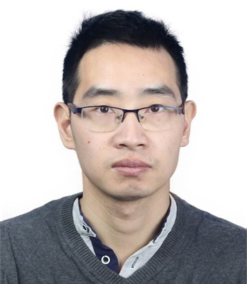
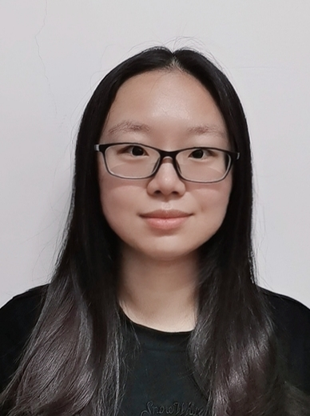
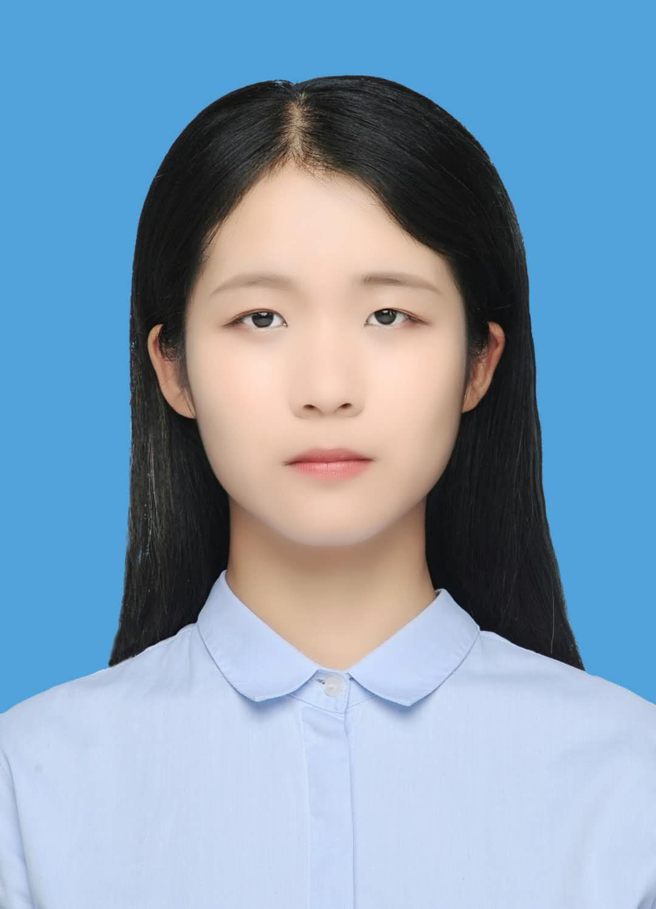
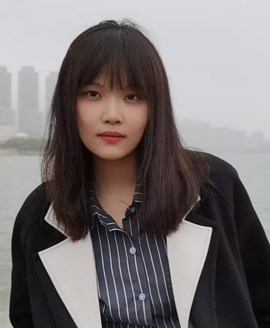
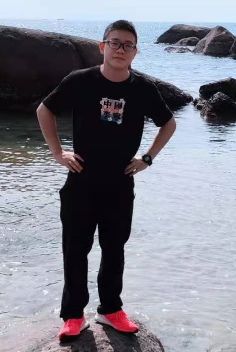

Faculty
Dr. Shao-Ping Lu
I am currently an associate professor at Nankai University in Tianjin, China. Prior to that, I was a senior researcher at Vrije Universiteit Brussel (VUB), and as a postdoc I had been in the team of Prof. Adrian Munteanu. I received my PhD degree in 2012 from Graphics & Geometric Computing Group at Computer Science Department in Tsinghua University in China under the supervision of Prof. Shi-Min Hu.
My research interests lie primarily in the intersection of visual computing, computer vision and computer graphics, with particular focus on 2D/multiview/3D image and video processing, computational photography and representation, visual scene analysis, machine learning, and visual security.
Email: slu@nankai.edu.cn
Address: Computer Science College Building,Nankai University (Jinnan campus), Tianjin, 300350, China
Students

Rong Wang Tao Zhong Meng-Yao Cui Lin Zhao Hong-bo Xu
Alumni (partial)
Ruizhi Shao (Tsinghua University, China)
Yarui Lv (Tsinghua University, China)
Xuanbai Chen (CMU, USA)
Tianrui Liu (CMU, USA)